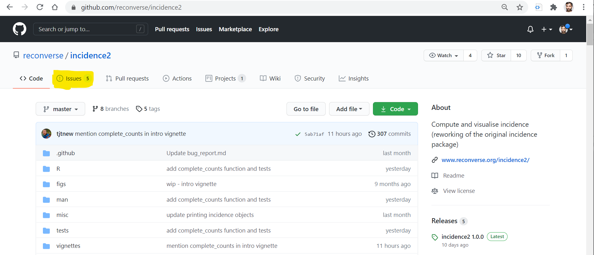

48 Nhờ sự trợ giúp
Chương này hướng dẫn cách nhận trợ giúp bằng cách đăng vấn đề mà bạn gặp phải lên Github hoặc đưa ra một ví dụ giả lập (“reprex”) lên các diễn đàn trực tuyến.
48.1 Đăng vấn đề lên Github
Nhiều packages và dự án trong R được lưu trữ mã code của chúng trên trang web Github.com. Bạn có thể trao đổi trực tiếp với các tác giả của các package hoặc dự án này bằng cách đăng một “Issue” qua trang web Github.com..
Tìm hiểu thêm về cách lưu trữ các tệp của bạn trên Github trong chương Version control với Git và Github.
Trên Github, mỗi dự án được chứa trong một kho lưu trữ. Mỗi kho chứa code, dữ liệu, kết quả đầu ra, tài liệu trợ giúp, v.v. Ngoài ra còn có một cách để trao đổi với các tác giả được gọi là “Issues”.
Xem các ảnh bên dưới về Github để hiểu thêm về package incidence2 (được sử dụng để tạo đường cong dịch bệnh). Trong ảnh dưới, bạn có thể thấy mục “Issues” được tô màu vàng. Số 5 bên cạnh chữ “Issues” có nghĩa là có 5 vấn đề đang được mở.

Ấn vào mục Issues, bạn có thể thấy các vấn đề đang mở được hiện ra. Hãy xem lại chúng để đảm bảo những vấn đề này chưa được giải quyết. Bạn có thể mở một vấn đề mới bằng cách nhấp vào nút màu xanh lá cây “New issue” ở bên phải. Để thực hiện những thao tác này, bạn sẽ cần mở một tài khoản Github.

Để đọc các tài liệu nâng cao hơn về cách xử lý các vấn đề trong kho lưu trữ Github của riêng bạn, hãy xem Tài liệu về Issues trong Github.
48.2 Ví dụ giả lập
Cung cấp một ví dụ giả lập (“reprex”) là chìa khóa để nhận được giúp đỡ khi đăng bài thảo luận trên các diễn đàn hoặc trong vấn đề Github issue. Để người khác có thể giúp bạn, bạn phải cho họ một ví dụ cụ thể để họ có thể xử ý vấn dề của bạn trên máy tính của chính họ. Ví dụ của bạn cần phải:
- Trình bày sự cố bạn gặp phải
- Hãy nhớ ngắn gọn nhất có thể, bạn chi cân ghi dữ liệu và đoạn code cần thiết để giả lập lại sự cố của bạn
- Đủ thông tin để giả lập lại tình huống của bạn, ví dụ như các thông tin như các đối tượng (ví dụ: dữ liệu), tất cả package được gọi (ví dụ:
library()hoặcp_load()).
Ngoài ra, hãy đảm bảo rằng bạn không đăng bất kỳ dữ liệu nhạy cảm nào với reprex! Bạn có thể tạo các data frames mẫu hoặc sử dụng một trong các data frames có sẵn trong R (nhập data()để mở danh sách các tập dữ liệu này).
Package reprex
Package reprex có thể hỗ trợ bạn tạo một ví dụ giả lập
- Package reprex được cài đặt với package tidyverse, vì vậy hãy gọi một trong hai package:
- Bắt đầu một đoạn R script tạo ra vấn đề của bạn, hãy làm từng từng bước một, bắt đầu từ việc tải các package và dữ liệu.
# load packages
pacman::p_load(
tidyverse, # data mgmt and vizualization
outbreaks) # example outbreak datasets
# flu epidemic case linelist
outbreak_raw <- outbreaks::fluH7N9_china_2013 # retrieve dataset from outbreaks package
# Clean dataset
outbreak <- outbreak_raw %>%
mutate(across(contains("date"), as.Date))
# Plot epidemic
ggplot(data = outbreak)+
geom_histogram(
mapping = aes(x = date_of_onset),
binwidth = 7
)+
scale_x_date(
date_format = "%d %m"
)Sao chép tất cả code vào bộ nhớ tạm của bạn và chạy lệnh sau:
Bạn sẽ thấy một tệp HTML xuất hiện trong cửa sổ RStudio Viewer. Nó sẽ chứa tất cả code của bạn và bất kỳ cảnh báo, lỗi hoặc biểu đồ nào. Tệp này cũng được sao chép vào bộ nhớ tạm của bạn, vì vậy bạn có thể đăng trực tiếp nó lên một vấn đề trên Github hoặc một bài đăng trên diễn đàn.

- Nếu bạn đặt
session_info = TRUE, thì kết quả đầu ra của lệnhsessioninfo::session_info()sẽ được bao gồm với các phiên bản R và package R của bạn. - Bạn có thể cung cấp một thư mục làm việc cho
wd =
- Bạn có thể đọc thêm về các đối số và các biến số có thể có tại Tài liệu này hoặc bằng cách nhập
?reprex
Trong ví dụ trên, lệnh ggplot() không chạy vì đối số date_format = không đúng. Nó phải là date_labels =.
Bộ dữ liệu tối giản
Những người giúp bạn cần sử dụng dữ liệu của bạn - lý tưởng nhất là họ có thể tạo ra nó bằng code.
Để tạo một tập dữ liệu tối giản, hãy xem xét việc ẩn danh và chỉ sử dụng một tập con của các quan sát.
ĐANG ĐƯỢC PHÁT TRIỂN - Bạn có thể sử dụng lệnh dput() để tạo một bộ dữ liệu tối giản.
48.3 Đăng lên diễn đàn
Bạn cần đọc nhiều bài viết trên diễn đàn. Hiểu được bài đăng nào được viết tốt và bài nào thì không.
- Đầu tiên, bạn hãy quyết định xem có nên đặt câu hỏi hay không. Bạn đã kỹ lưỡng tìm kiếm câu trả lời trên các trang web diễn đàn, thử các cụm từ tìm kiếm khác nhau, để xem liệu câu hỏi của bạn đã được đặt ra chưa?
- Đặt cho câu hỏi của bạn với một tiêu đề thông tin đầy đủ (không phải “Trợ giúp! Điều này không hoạt động”).
- Viết câu hỏi của bạn:
- Giới thiệu hoàn cảnh và vấn đề của bạn
- Liên kết đến các bài đăng về các vấn đề tương tự và giải thích cách họ không trả lời câu hỏi của bạn
- Ghi bất kỳ thông tin liên quan nào để giúp những người không rõ bối cảnh công việc của bạn
- Đưa ra một ví dụ giả lập với thông tin tối thiểu về phiên làm việc R của bạn
- Sử dụng đúng chính tả, ngữ pháp, dấu câu và ngắt câu hỏi của bạn thành các đoạn văn để dễ đọc hơn
Theo dõi câu hỏi của bạn sau khi được đăng để trả lời bất kỳ yêu cầu làm rõ nào. Lịch sự và nhã nhặn - thường những người trả lời đều tình nguyện dành thời gian của họ để giúp bạn. Nếu bạn có một câu hỏi tiếp theo, hãy cân nhắc xem nó có nên là một câu hỏi được đăng riêng hay không.
Đánh dấu câu hỏi là đã trả lời, nếu bạn đã nhận được câu trả lời đáp ứng yêu cầu ban đầu của bạn. Điều này giúp những người truy cập sau nhanh chóng nhận ra giải pháp cho vấn đề tương tự với bạn.
Đọc những bài đăng này trong các tài liệu Cách đặt một câu hỏi tốt và Bộ quy tắc ứng xử.
48.4 Tài liệu tham khảo
Package Tidyverse về cách nhận trợ giúp!
Lời khuyên về tạo ra một tập dữ liệu tối thiểu
Tài liệu về Hàm dput